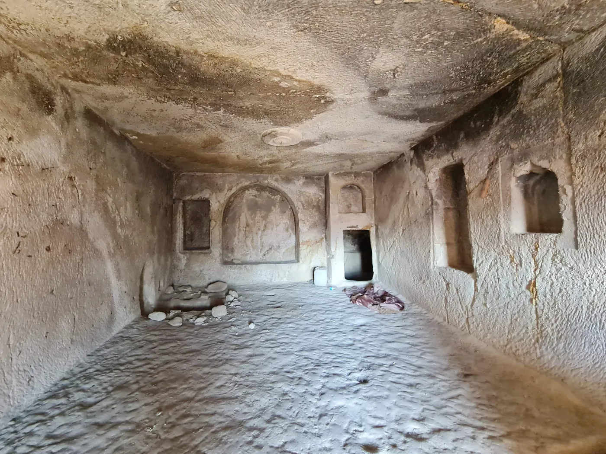

Deniz seviyesinden 1.140 metre yükseklikte, Ürgüp’ün kalbi olan Temenni Tepesi, sadece manzarasıyla değil, barındırdığı derin tarihle de büyüleyicidir. Antik çağlarda kutsal kabul edilen bu tepe, hem Selçuklu ve Osmanlı dönemine ait anıt mezarlara hem de kayalara oyulmuş devasa bir yerleşim kompleksine ev sahipliği yapar. Kayalara Oyulmuş Gizli Şehir Tepenin dik yamaçlarında yapılan son araştırmalar, burada çok katmanlı bir yaşamın izlerini ortaya çıkarmıştır. Belgelenen 38 farklı kaya oyma yapı arasında; katlar arası dikey şaftlarla bağlanan evler, savunma amaçlı kullanılan devasa sürgü taşları ve "Yukarı Georgios Kilisesi" olarak bilinen kaya kilisesi bulunur. Yaşamın İzleri Kompleksin içinde gezerken geçmişin günlük hayatına dair ipuçlarını görebilirsiniz: Atölyeler: Zeminlerdeki özel çukurlar, burada halı dokuma tezgahlarının kurulduğunu gösterir. Ticaret ve Üretim: Tonozlu tavanları ve eyvanlı yapılarıyla dükkan olarak kullanıldığı düşünülen alanlar ve üzümün işlendiği şırahaneler (şarap imalathaneleri) tespit edilmiştir. Savunma: Bazı odaların girişindeki tünellerde bulunan ve bugün işlevsiz dursa da bir zamanlar hayat kurtaran 1.35 metre çapındaki taş kapılar, buranın güvenliğe ne kadar önem verdiğini kanıtlar.
At 1,140 metres above sea level, Temenni Hill — the heart of Ürgüp — is captivating not only for its views but for the deep history it holds. Considered sacred in antiquity, it is home both to monumental tombs of the Seljuk and Ottoman periods and to a vast settlement complex carved into the rock. Recent research on the steep slopes has revealed a multi-layered life: among the 38 documented rock-cut structures are houses connected by vertical shafts between floors, massive sliding stones used for defence, and a rock church known as the 'Upper Georgios Church.' Clues to daily life abound — special pits in the floors show carpet-weaving looms were set up here; vaulted, iwan-like spaces thought to have served as shops and wine presses (şırahane) have been identified; and stone doors 1.35 metres in diameter at some room entrances, now non-functional but once lifesaving, prove how much importance was given to security.